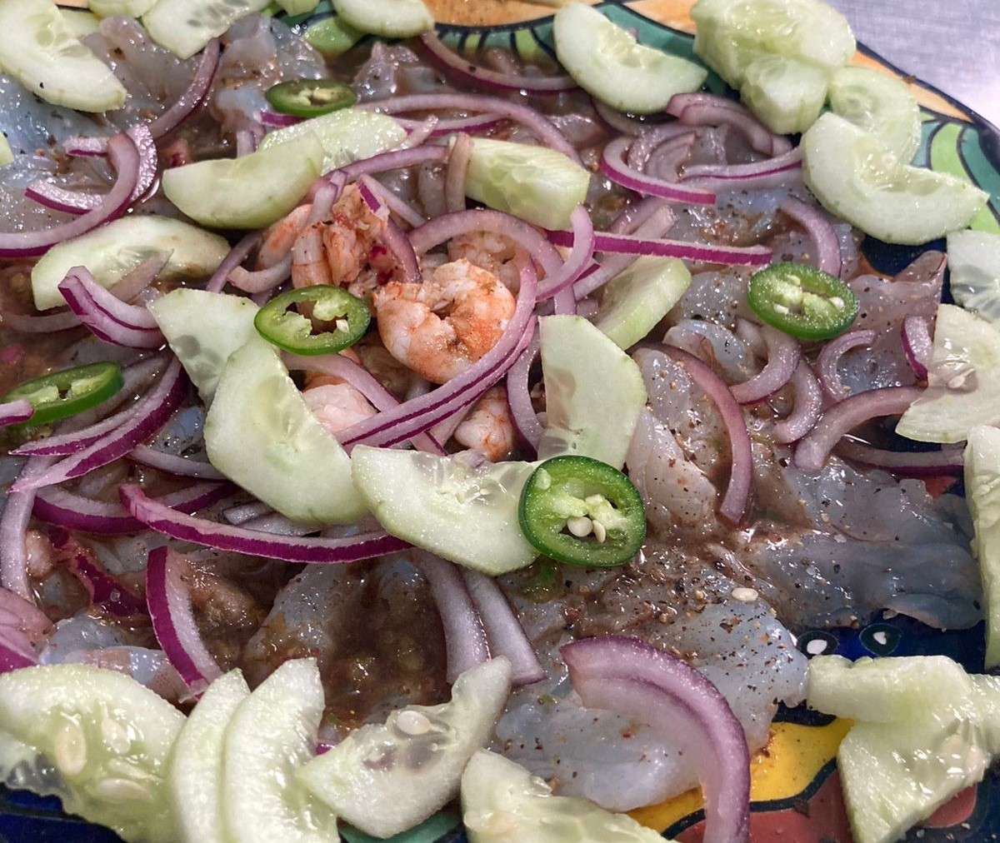
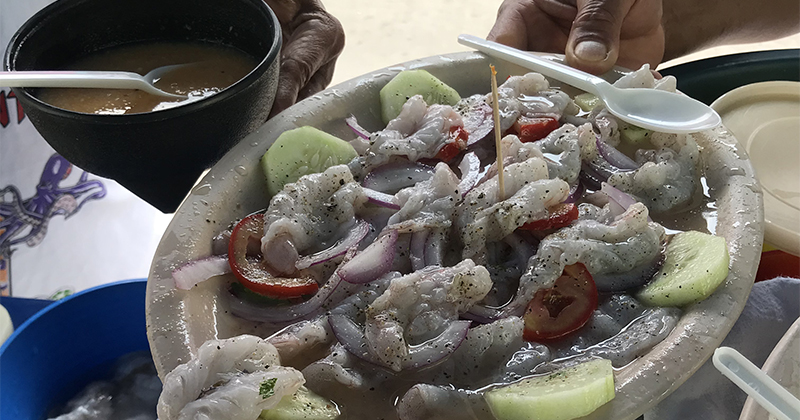
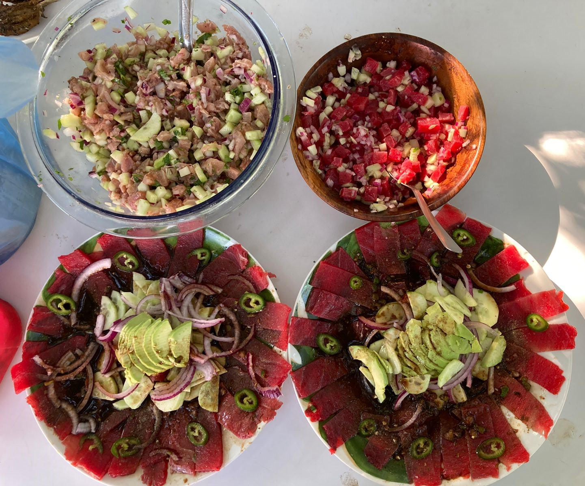

Gastronomía Mazatleca
-
Agua chile
El aguachile es un platillo fresco preparado con pocos ingredientes, pero con un sabor inigualable. Los camarones al aguachile se curten al bañarse con una salsa de chiles y limón, acompañado de pepino y cebolla morada. Esta delicia es una de los platillos más típicos de Mazatlán y de México.
Ver receta: Aguachile Mazatleco
